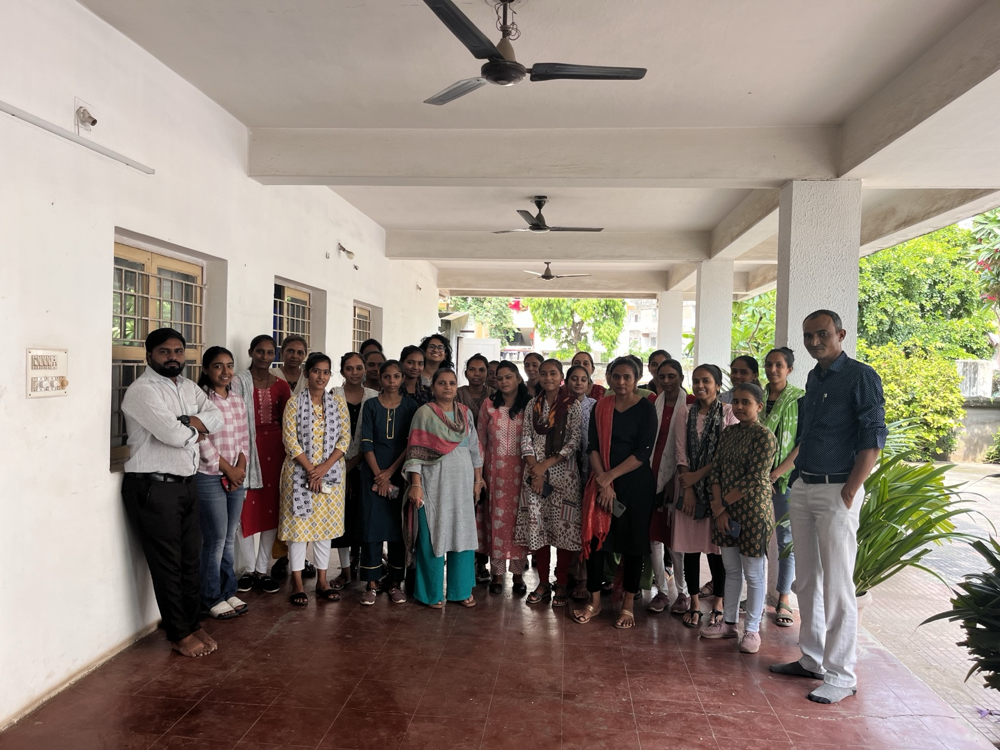
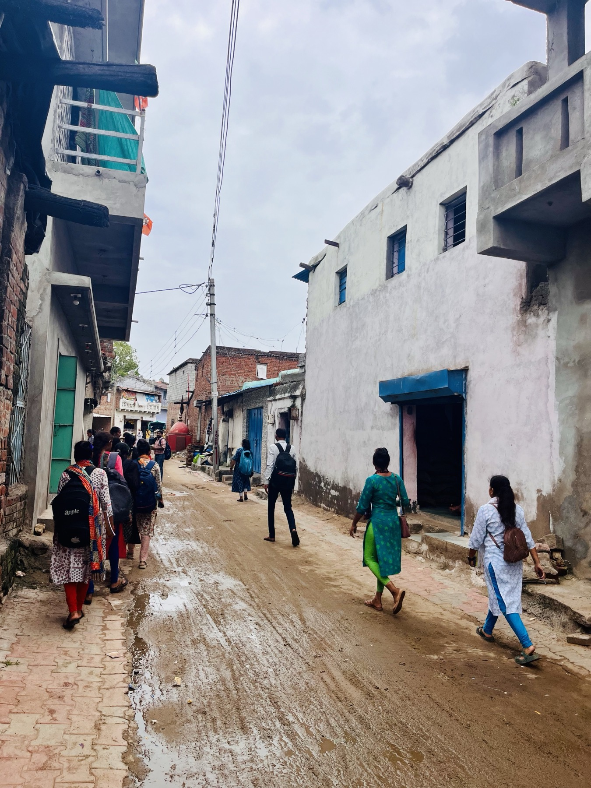
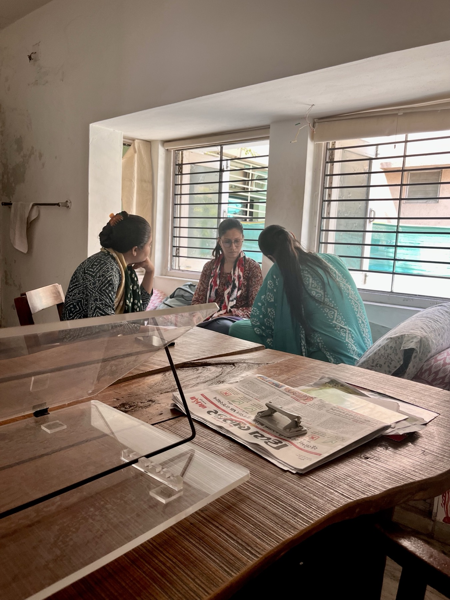
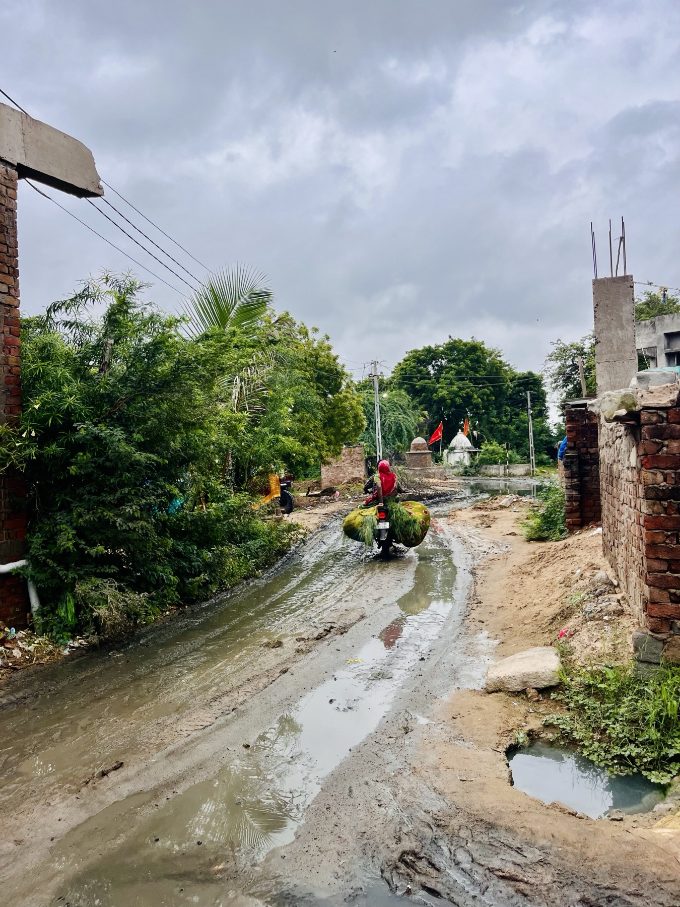
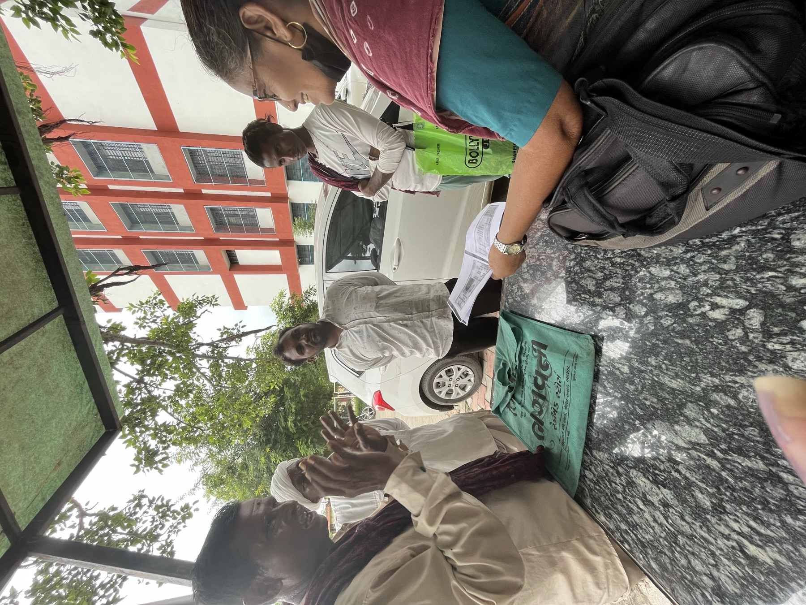
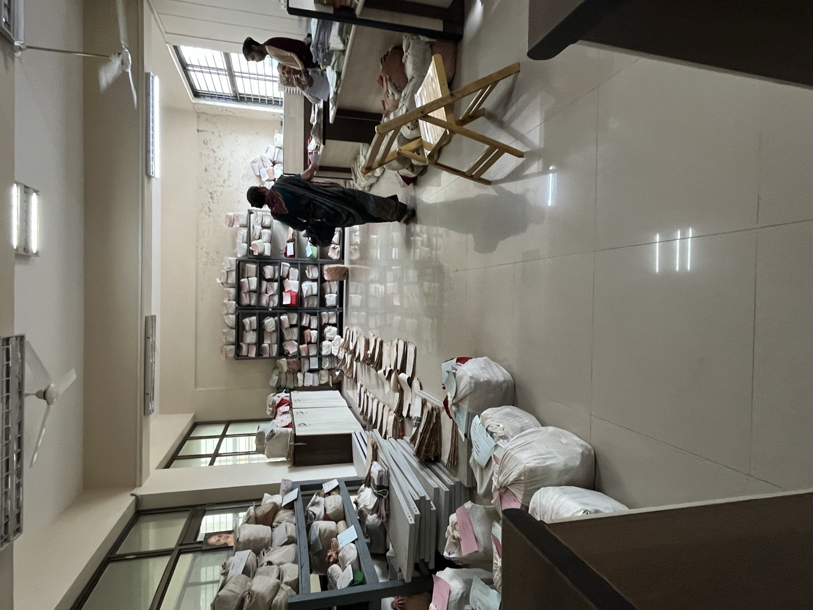
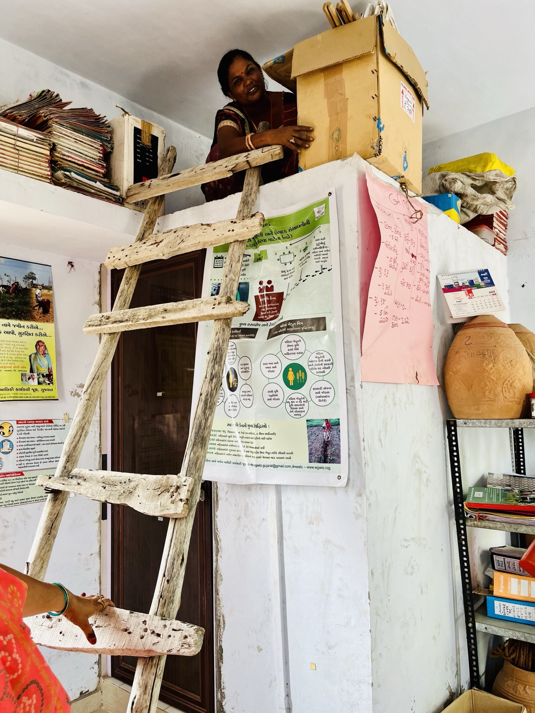
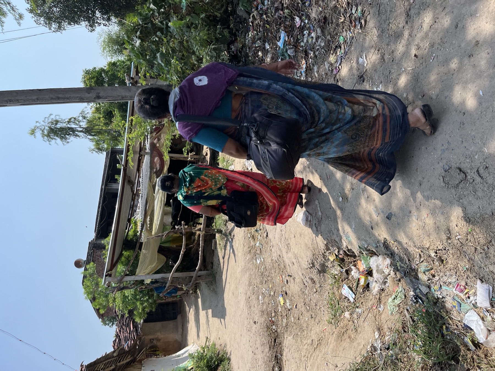
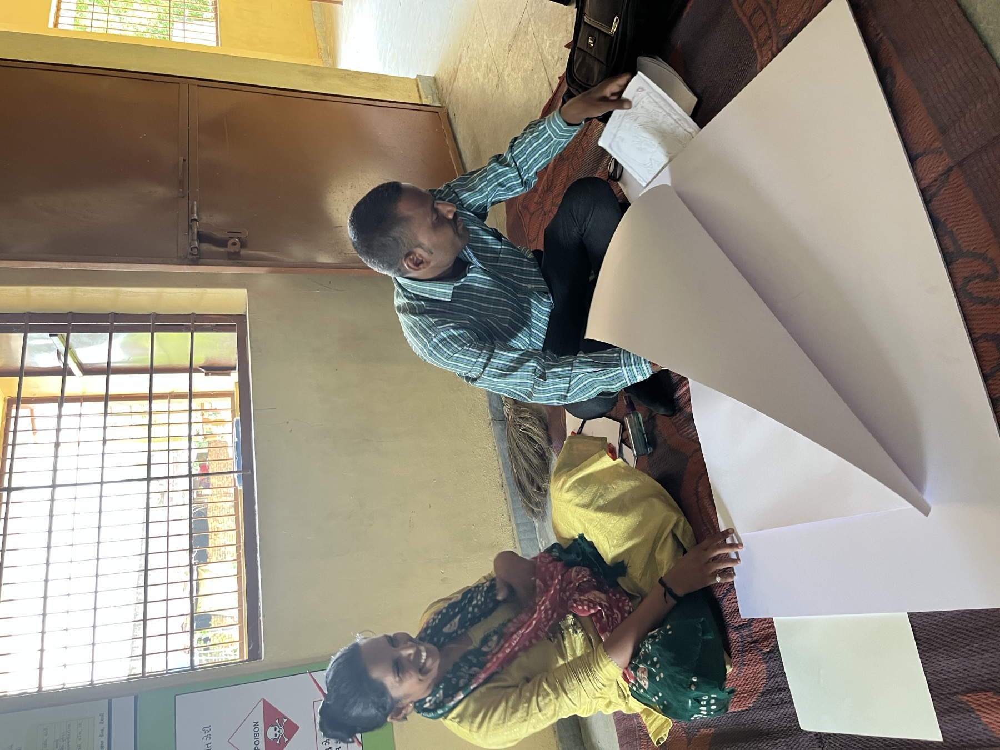
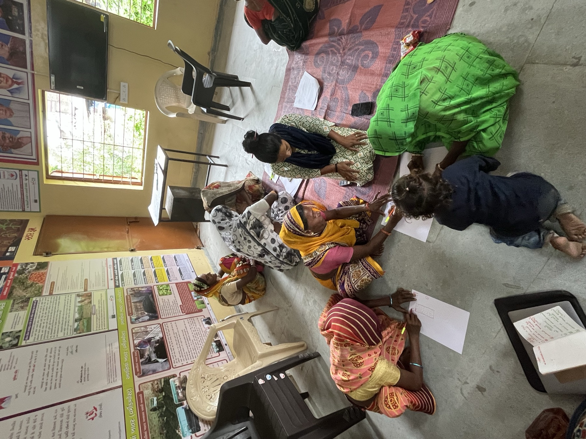

My research is grounded in fieldwork and collaboration
with communities, researchers, and organizations in the places that I study; they span my roles in both development research and policy and academia. These photographs document some of the people, places, and processes and that have shaped my work. All photos were taken with consent, and most of them were taken by me. Where I am in the picture itself, it was taken by someone else attending the activity.

Gujarat, 2024. Enumerator team training.

Gujarat, 2024. Enumerator team piloting.
Gujarat, 2024. Surveyor practice during enumerator training.

Gujarat, 2024. Enumerator training.
Gujarat, 2024. End-of-day survey team debrief groups.
Gujarat, 2024. A member of the team successfully finds mobile connectivity through elevation!

Gujarat, 2024. Survey site.

Gujarat, 2024. Discussions between counselors and lawyers outside of local courthouse.

Gujarat, 2024. Local courthouse record room.
Gujarat, 2024. Tea break.
Gujarat, 2023. Claim-making at a local courthouse.

Gujarat, 2023. Locating archival records.

Gujarat, 2023. Counselors in village.

Gujarat, 2022. Village mapping.

Gujarat, 2022. Focus group discussion community map exercise.
Gujarat, 2022. Participatory mapping walk.
Delhi, 2020. Qualitative research team concept mapping.
Nigeria, 2022. Women's group meeting.
Gujarat, 2019. Land ownership discussions.
Gujarat, 2019. Women's group discussion on land rights.
Gujarat, 2019. Self-Employed Women's Association group training on processing and marketing agricultural produce.
Jharkhand, 2019. Women's self-help group training.
Jharkhand, 2019. Women's self-help group entrepreneur.
Jharkhand, 2019. Self-help group cluster-level federation meeting.
Jharkhand, 2019. Self-help group financial records meeting.
Kerala, 2019. Interview site.
Kerala, 2019. Fieldwork site.
Kerala, 2019. Kudumbashree self-help group women's performance: a woman plays a drunk husband character for a public skit.
Kerala, 2019. NREGA worksite.
Kerala, 2018. Tenement housing, tea plantation workers.
Nepal, 2015. Post-earthquake temporary settlement.
Nepal, 2015. Post-earthquake fieldwork in Nepal.
Nepal, 2015. Post-earthquake rebuilding materials.
Kenya, 2014. Facilitators setting up for a focus group discussion.